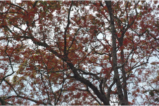
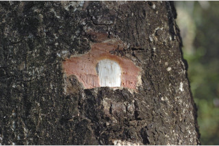
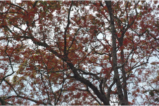
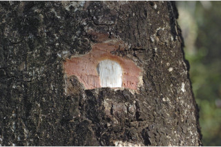

Tamil: Puvam, Puvatthi, Pumaratha, Karanachi, Pulichi Malayalam: Dhoothalam, Poovanam, Poovam. Kannada: Chakota, Sagade English: Ceylon Oak, Kusum, Ma English Kannada Malayalam Tamil Botanical descriptions Ecology Distribution Literature Botanical descriptions : Habit : Large deciduous trees up to 20 m tall. Trunk\bark : Trunk fluted ; bark grey, irregularly scaly ; blaze pink. Branchlets : Young branchlets terete , pubescent . Leaves : Leaves compound , paripinnate , alternate , spiral ; rachis pulvinate , glabrous ; petiolule up to 0.3 cm long, glabrous , leaflets 2-3 pairs, opposite , increasing in size towards apex , 4-26 x 1.8-9 cm, variable in shape, elliptic-oblong to oblanceolate - obovate , apex rounded , sometimes emarginate , base asymmetric , cuneate to rounded , margin entire , thinly coriaceous , glabrous ; midrib thinly raised above; secondary_nerves ca. 16 pairs, straight and curved near margin; tertiary_nerves reticulo-percurrent . Flowers : Inflorescence axillary panicles ; flowers polygamodioecious , subsessile . Fruit& seed : Drupe , 1.5 x 1 cm, ellipsoid , apiculate , echinate ; seeds 1-2 enclosed in aril . Ecology : Along margin of evergreen forests, semi-evergreen and deciduous forests up to 1000 m. Distribution : Indomalaysia; in the Western_Ghats- throughout. Literature : Oken, Allg. Naturgesch. 3: 1341. 1841; Gamble, Fl. Madras 1: 248. 1997 (re. ed); Sasidharan, Biodiversity documentation for Kerala- Flowering Plants, part 6:109. 2004; Saldanha, Fl. Karnataka 2: 196. 1996; Cook, Fl. Bombay 1:266. 1903; Almeida, Fl. Maharashtra 1:282. 1996. Top of the Page
Schleichera trijuga Willd.
 


